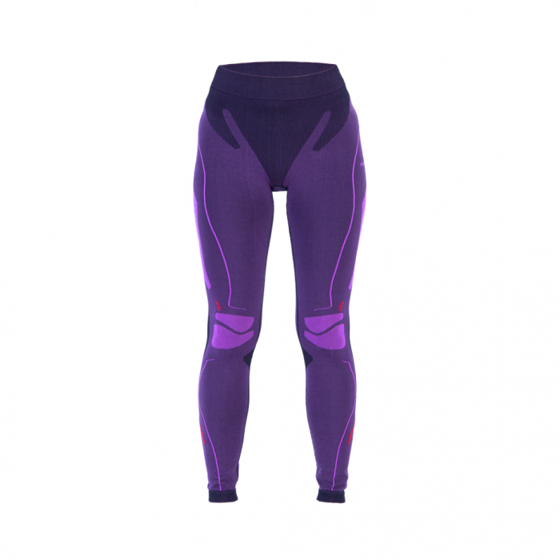

Welcome to terminiai apatiniai
Vaikų terminiai apatiniai drabužiai - kokie šiluminiai apatiniai drabužiai yra geresni vaikui? - Vaikai - 2020
2020.10.29 03:58Namai ir laisvalaikis Dieta ir mityba Sveikata Grožis Sodas Vaikai Mada Psichologija Ryšys Turizmas Karjera Sportas ir joga Vestuvės Pagrindinis Namai ir laisvalaikis Dieta ir mityba Sveikata Grožis Sodas Vaikai Vaikai
Terminis apatinis trikotažas vaikams - kaip pasirinkti ir kaip dėvėti terminį apatinį trikotažą vaikams?
Visi tėvai yra susipažinę su stebuklinga žiemos švente su Naujųjų Metų švenčių dienomis, kurie, be to, kelia grėsmę dėl šalčio dėl vaiko aušinimo ar perkaitimo. Peršalimas gali būti ūminių kvėpavimo takų virusinių infekcijų ir kitų peršalimo grandinės pradžia.
Taip pat žiūrėkite: Kaip apsirengti vaiką žiemą, kad jis negalėtų susirgti?
Vaikas negali pastebėti pernelyg didelio prakaitavimo ar šalto oro srautų, tačiau tai gali būti užkirstas kelias terminiai apatiniai drabužiai vaikams .
Vaikų sluoksniuotų drabužių privalumai ir ypatybės - už ką tai būtina?
garsėja padidėjusiu patvarumu pasižymi dideliu elastingumu ir nesitęsia turi vandeniui atsparų paviršių nepažeidžia odos kvėpavimo nepatiria jautrios odos, nekliudo judėti ir tankiai susilieja su oda taupo komfortą blogų oro sąlygų metu kiek įmanoma, šiltas nereikia lyginimo nekeičia spalvos ir neišnyks turi antibakterinį sluoksnį, kad pašalintų prakaito kvapą plokščios siūlės jokių vidinių etikečių
Kūdikių apatiniai - tipai, kaip pasirinkti terminį apatinį trikotažą vaikams?
Pažvelkite į stilius, spalvas ir medžiagas, todėl kyla naudingas klausimas - Kokie terminiai apatiniai drabužiai pasirinkti vaiką ?
Atsakingas tėvas neklausys pardavėjo patarimo, kuris kartais yra suinteresuotas greitai parduoti, o ne taupyti pinigus. Mes parengėme jums objektyvias taisykles ir patarimus. optimalus vaikų apatinio trikotažo pasirinkimas .
Terminiai apatiniai drabužiai vaikams yra pagaminti iš natūralūs ir sintetiniai audiniai.
Jei nesate tikri, kuris terminis apatinis trikotažas yra geresnis vaikui, pagalvokite už kokias sąlygas jis yra skirtas.
Kaip dėvėti terminį apatinį trikotažą vaikams - pagrindines taisykles
Vaikams iki 2 metų nereikia sintetinio terminio apatinio trikotažo. nes jie šiek tiek prakaito. Jiems geriau rinktis vilną arba medvilninį apatinį trikotažą. Ypač šalto klimato sąlygomis yra dviejų sluoksnių modelis, kurio viduje yra medvilnė ir išorinė vilna. Vaikams po 2 metų galite pasirinkti dviejų sluoksnių terminį apatinį trikotažą kai vidinis sluoksnis yra natūralus ir išorinis sluoksnis yra sintetinis. Grynas vilnos terminis apatinis trikotažas nėra skirtas visiems , nes vilna gali netikti vaiko odai ir sukelti alerginį dermatitą. Jūs negalite dėvėti terminių apatinių drabužių ant kitų drabužių! Siekiant išsaugoti šilumines savybes, jis turi būti dėvimas ant plika kūno. Nepirkite terminio apatinio trikotažo augimui . Montavimo metu pasirinkite savo vaiko šiluminius apatinius dydžius. Tuo pačiu metu įsitikinkite, kad jis puikiai tinka, bet netrukdo judėti.
Jei girdėjote neigiamus atsiliepimus apie šiluminius apatinius, galite paklausti - ar tėvai žino kaip dėvėti terminį apatinį vaiką . Laikydamiesi visų išvardytų taisyklių jūsų vaikas jausis patogiai, nepriklausomai nuo oro sąlygų.
Šiltas apatinis trikotažas ypač tinka mobiliems vaikams didelis atsparumas dilimui, patogus dėvėjimas ir hipotermijos prevencija . Jums nebereikia būti nervingi ar įtikinti mane keisti drabužius - tiesiog dėvėkite patogų rinkinį ir Jūs galite būti ramus vaiko sveikatai.
Žiūrėti vaizdo įrašą: LINGERIE TRY ON HAUL. Sexy Adam and Eve Review (Spalio Mėn 2020).
Įdomios Straipsniai
Juodmedis - sudėtis, nauda ir kontraindikacijos
October 29,2020Astilba - iškrovimas ir išvykimas atvirame lauke
October 29,2020Pratimai su kėdėmis gražiams klubams ir sėdmenims
October 29,2020Rekomenduojama
7 tipai grindų valymui - tai geriau ir kaip pasirinkti tinkamą?
Namai ir laisvalaikisKaip padaryti mėnulio manikiūrą namuose
GrožisMadingas manikiūras 2013 m. Mados tendencijos manikiūre, nuotraukoje
MadaPopuliarios Temos, 2020
Visi darbo stimuliavimo metodai ligoninėje ar namuose - indikacijos ir kontraindikacijos, komplikacijos
VaikaiMados tendencija 2019 plisuotos suknelės ir sijonai
MadaBarščiai su dilgėlėmis - sveikatos sriubos receptai
Dieta ir mitybaMeliono uogienė: geriausi receptai
Dieta ir mitybaSerumo blynai - nuoseklieji blynų receptai
Dieta ir mityba Copyright 2020 \ Moterų Laimė Ir Gerovė Žurnalas \ Terminis apatinis trikotažas vaikams - kaip pasirinkti ir kaip dėvėti terminį apatinį trikotažą vaikams?